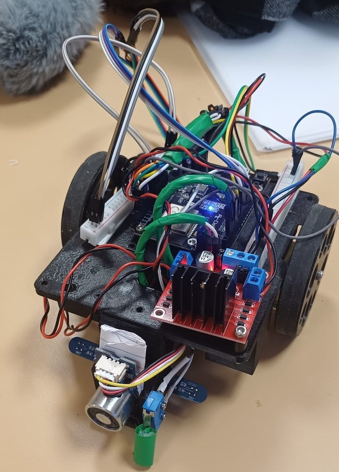
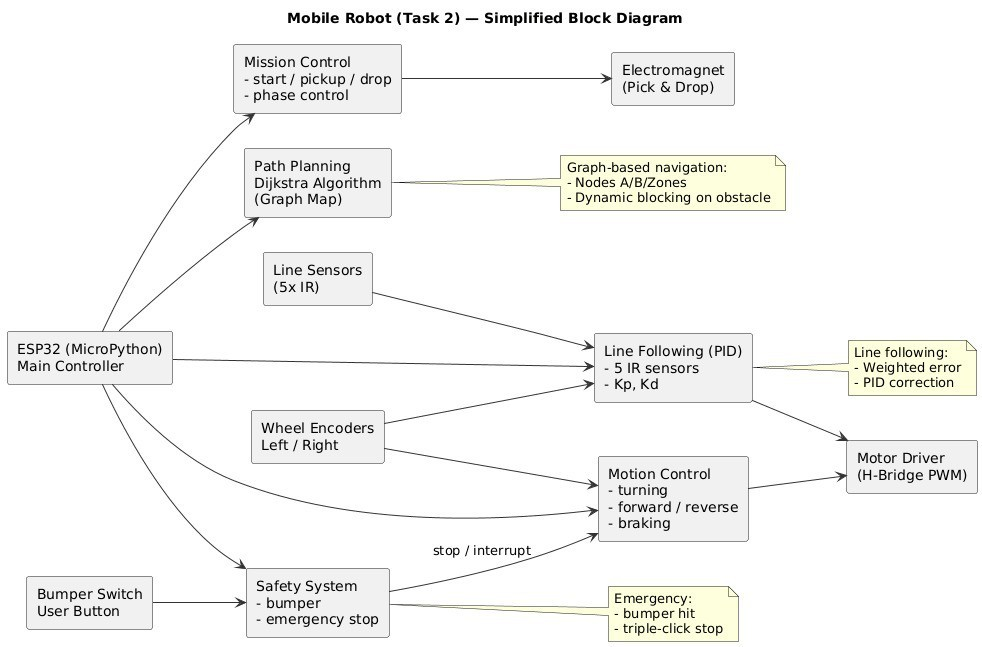

Autonomous Line-Following AGV with Dijkstra Path Planning & Obstacle Rerouting
Erasmus+ BIP Team project Jan 2026 · Besançon
The mobile-robot track of the Erasmus+ BIP on Control, Perception and Embedded Programming for Robotics simulates an automated guided vehicle (AGV). A two-wheeled differential-drive robot follows black lines on a map, picks up a box with an electromagnet, and delivers it to a bay. It finds its own route with Dijkstra's algorithm and re-plans when it hits an obstacle.
Everything runs on an ESP32 in MicroPython. The code is modular: low-level motor, sensor and odometry functions sit beneath high-level path planning and mission control.
The Challenges
- 1: Fixed route. Collect a box from a known bay and deliver it to a known bay.
- 2: Dynamic start/end. Pickup and drop-off bays are only given at run time.
- 3: Obstacle avoidance. Unknown bays, plus obstacles on the map that force the robot to find a new route.

1) Hardware

| Component | Part | Role |
|---|---|---|
| Controller | ESP32-WROOM-32 | All control, planning and I/O |
| Drive | 2× DC motors (7 cm wheels), L298N dual H-bridge, 1 kHz PWM | Speed and direction of each wheel |
| Odometry | 2× magnetic wheel encoders (interrupt-counted) | Distance travelled and precise in-place turns |
| Line sensing | 5-channel analog IR array | Line position error and intersection detection |
| Manipulation | 5 V electromagnet | Picks up and releases the box |
| Collision / UI | Roller microswitch (bumper) | Detects the box and obstacles; a triple click is an emergency stop |
| Power | 2× Li-ion batteries | Enough current for the motors and the electromagnet |
The IR sensors are read as analog values and given individual thresholds before being turned into binary. This compensates for sensors that naturally read too high or too low, which a fixed digital threshold could not handle.
2) How the Control Strategy Evolved
Version 1: scripted actions
The first approach for Challenge 1 was a hard-coded list of actions, one per intersection (e.g.
["FORWARD", "LEFT", "FORWARD"]). It counted intersections with the line sensors, followed lines without
encoder feedback, and timed its turns.
Version 2: graph + odometry
Random start and end bays made scripting impossible, so the code was rebuilt around a weighted topological graph combined with encoder odometry. This version handled all three challenges.
3) Map as a Graph & Dijkstra Planning
- Nodes are decision points: the start, the pickup bays A1–A4, the delivery bays B1–B4, and the junctions where lines meet.
- Edges are the line segments between nodes, weighted by their physical length in cm, e.g.
'START': {'E_1': 20, 'M_0': 76}. - Each node also has grid coordinates, so the robot knows the compass direction of every edge. Comparing that with its current heading gives the turn to make: straight, left, right or 180°.
- Dijkstra (with a
heapqpriority queue) returns the cheapest node sequence between any two nodes, e.g. A3 → … → B3.
Obstacle handling and re-planning
When the bumper is hit on the way to the pickup bay:
- The robot brakes, then reverses to the previous intersection using line following in reverse.
- It moves forward 9 cm to centre its axle on the node.
- It blocks the edge in both directions by setting its cost to 99999, then runs Dijkstra again from that node.
Once the box is picked up, obstacle detection is turned off, because the bumper is in contact with the load.
4) Line Following, Turns & Speed Zones
PD line following
The five sensors are weighted to give a position error, so the robot knows how far off-centre it is, not just which side:
Encoder-based motion
- Distance: the average of both wheels' encoder counts, using separately calibrated pulses per revolution for each wheel (867 and 824).
- Turns: 90° and 180° turns run in place until each wheel reaches its target encoder count, calculated from the wheel diameter and the 11 cm track width.
- Low-speed correction: at slower speeds the robot slips less, so the turn targets are reduced by 20% to stop it over-rotating.
- Active braking: a short reverse pulse stops the robot precisely at nodes.
Smart speed zones: the robot drives at full speed along the long corridors and drops to 70% only while moving between nodes inside the narrow loading bays (A and B zones), where precision matters most.
5) Mission Flow & Safety
Wait for click → Plan to pickup → Drive & turn per edge → Bumper contact → magnet ON → Plan to drop-off → Magnet OFF & reverse
- A safety check runs inside every motion loop: a triple click on the bumper raises an emergency stop that cuts the motors and the magnet.
- Timestamped logs from each module (route, speed, recovery, sensor events) made it much faster to debug on the competition map.